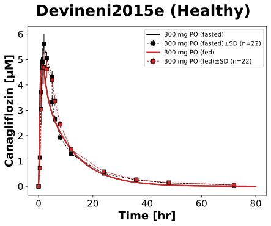
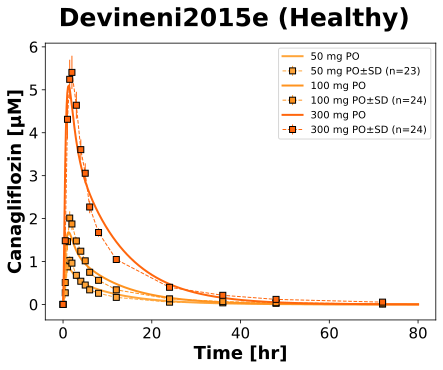

|
 |
|
 |
../../../../experiments/studies/devineni2015e.py
from typing import Dict
from sbmlsim.data import DataSet, load_pkdb_dataframe
from sbmlsim.fit import FitMapping, FitData
from sbmlutils.console import console
from pkdb_models.models.canagliflozin.experiments.base_experiment import (
CanagliflozinSimulationExperiment,
)
from pkdb_models.models.canagliflozin.experiments.metadata import Tissue, Route, Dosing, ApplicationForm, Health, \
Fasting, CanagliflozinMappingMetaData
from sbmlsim.plot import Axis, Figure
from sbmlsim.simulation import Timecourse, TimecourseSim
from pkdb_models.models.canagliflozin.helpers import run_experiments
class Devineni2015e(CanagliflozinSimulationExperiment):
"""Simulation experiment of Devineni2015e."""
conditions = ["fasted", "fed"]
doses = [50, 100, 300]
bodyweights = {50: 72.6, 100: 72.6, 300: 72.6}
def datasets(self) -> Dict[str, DataSet]:
dsets = {}
for fig_id in ["Fig1", "Fig2"]:
df = load_pkdb_dataframe(f"{self.sid}_{fig_id}", data_path=self.data_path)
for label, df_label in df.groupby("label"):
dset = DataSet.from_df(df_label, self.ureg)
# unit conversion to mole/l
if label.startswith("canagliflozin_"):
dset.unit_conversion("mean", 1 / self.Mr.can)
dsets[f"{label}"] = dset
# console.print(dsets)
# console.print(dsets.keys())
return dsets
def simulations(self) -> Dict[str, TimecourseSim]:
Q_ = self.Q_
tcsims = {}
for condition in self.conditions:
tcsims[f"po_can300_{condition}"] = TimecourseSim(
[Timecourse(
start=0,
end=80 * 60, # [min]
steps=500,
changes={
**self.default_changes(),
"BW": Q_(73.4, "kg"),
"[KI__fpg]": Q_(5, "mM"), # healthy
"PODOSE_can": Q_(300, "mg"),
"GU__f_absorption": Q_(self.fasting_map[condition], "dimensionless"),
},
)]
)
for dose in self.doses:
tcsims[f"po_can{dose}_fasted"] = TimecourseSim(
Timecourse(
start=0,
end=80 * 60, # [min]
steps=500,
changes={
**self.default_changes(),
"BW": Q_(self.bodyweights[dose], "kg"),
"[KI__fpg]": Q_(5, "mM"),
"PODOSE_can": Q_(dose, "mg"),
},
)
)
return tcsims
def fit_mappings(self) -> Dict[str, FitMapping]:
mappings = {}
for condition in self.conditions:
mappings[f"fm_po_can300_{condition}"] = FitMapping(
self,
reference=FitData(
self,
dataset=f"canagliflozin_CAN300_{condition}",
xid="time",
yid="mean",
yid_sd="mean_sd",
count="count",
),
observable=FitData(
self, task=f"task_po_can300_{condition}", xid="time", yid=f"[Cve_can]",
),
metadata=CanagliflozinMappingMetaData(
tissue=Tissue.PLASMA,
route=Route.PO,
application_form=ApplicationForm.TABLET,
dosing=Dosing.SINGLE,
health=Health.HEALTHY,
fasting=Fasting.FASTED if condition == "fasted" else Fasting.FED,
),
)
for dose in self.doses:
mappings[f"fm_po_can{dose}_single_fasted"] = FitMapping(
self,
reference=FitData(
self,
dataset=f"canagliflozin_CAN{dose}",
xid="time",
yid="mean",
yid_sd="mean_sd",
count="count",
),
observable=FitData(
self, task=f"task_po_can{dose}_fasted", xid="time", yid=f"[Cve_can]",
),
metadata=CanagliflozinMappingMetaData(
tissue=Tissue.PLASMA,
route=Route.PO,
application_form=ApplicationForm.TABLET,
dosing=Dosing.SINGLE,
health=Health.HEALTHY,
fasting=Fasting.FASTED,
),
)
return mappings
def figure_fastvsfed(self) -> Dict[str, Figure]:
fig = Figure(
experiment=self,
sid="Fig_fastvsfed",
num_rows=1,
num_cols=1,
name=f"{self.__class__.__name__} (Healthy)",
)
plots = fig.create_plots(
xaxis=Axis(self.label_time, unit=self.unit_time),
legend=True,
)
plots[0].set_yaxis(self.label_can, unit=self.unit_can)
# Fasted vs Fed at 300 mg
for condition in self.conditions:
label = "300 mg PO (fasted)" if condition == "fasted" else "300 mg PO (fed)"
# simulation
plots[0].add_data(
task=f"task_po_can300_{condition}",
xid="time",
yid="[Cve_can]",
label=label,
color=self.fasting_colors[condition],
)
# data
plots[0].add_data(
dataset=f"canagliflozin_CAN300_{condition}",
xid="time",
yid="mean",
yid_sd="mean_sd",
count="count",
label=label,
color=self.fasting_colors[condition],
)
return {
fig.sid: fig,
}
def figure_dose(self) -> Dict[str, Figure]:
fig = Figure(
experiment=self,
sid="Fig_dose",
num_rows=1,
num_cols=1,
name=f"{self.__class__.__name__} (Healthy)",
)
plots = fig.create_plots(
xaxis=Axis(self.label_time, unit=self.unit_time),
legend=True,
)
plots[0].set_yaxis(self.label_can, unit=self.unit_can)
# Dose dependency under fasted conditions
for dose in self.doses:
label = f"{dose} mg PO"
# simulation
plots[0].add_data(
task=f"task_po_can{dose}_fasted",
xid="time",
yid="[Cve_can]",
label=label,
color=self.dose_colors[dose],
)
# data
plots[0].add_data(
dataset=f"canagliflozin_CAN{dose}",
xid="time",
yid="mean",
yid_sd="mean_sd",
count="count",
label=label,
color=self.dose_colors[dose],
)
return {
fig.sid: fig,
}
def figures(self) -> Dict[str, Figure]:
return {
**self.figure_fastvsfed(),
**self.figure_dose(),
}
if __name__ == "__main__":
run_experiments(Devineni2015e, output_dir=Devineni2015e.__name__)
{kind=link}
{kind=link}